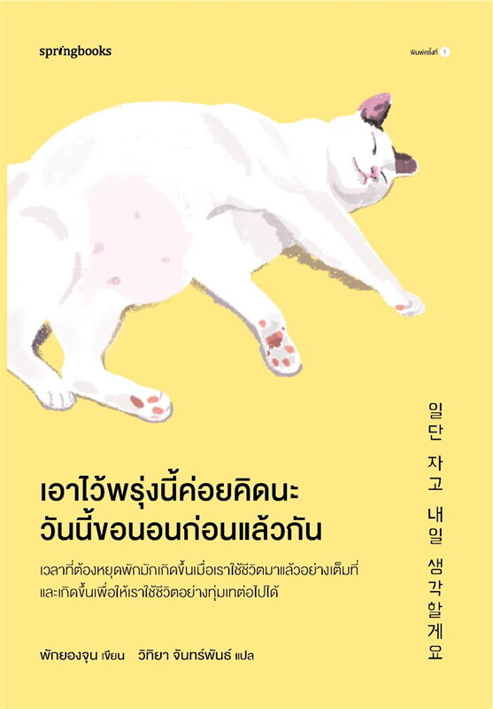

“เอาไว้พรุ่งนี้ค่อยคิดนะ วันนี้ขอนอนก่อนแล้วกัน”

“หวังเพียงว่าเมื่อถึงเวลาพักผ่อนแล้ว เราจะปล่อยวางความคิดอันหนักอึ้ง เก็บกวาดเรื่องราวต่าง ๆ ที่รกรุงรังภายในใจ เพื่อเพิ่มพื้นที่ว่างให้ตัวเราได้พักผ่อนอย่างแท้จริง เพราะเมื่อทั้งกายและใจได้พักอย่างเพียงพอแล้ว เราก็จะพร้อมก้าวเดินต่อไปได้เต็มที่”
เวลาที่เราต้องหยุดพัก มักเกิดขึ้นเมื่อเราใช้ชีวิตและพยายามมาอย่างเต็มที่แล้ว การพักผ่อนชั่วคราวช่วยชาร์จพลังให้เราพร้อมที่จะทุ่มเท และก้าวเดินต่อไปได้ไกลกว่าเดิม
แทนที่จะนั่งอึดอัด กังวลกับอดีตหรืออนาคตที่ยังมาไม่ถึง ให้หันมาสนุกและเพลิดเพลินกับปัจจุบันตรงหน้า เริ่มต้นทำสิ่งเล็ก ๆ ค่อยเป็นค่อยไปก็พอแล้ว
หากรู้สึกเหนื่อยล้าจนใจเฉา ลองพาตัวเองออกจากชีวิตประจำวันเดิม ๆ เช่น ออกไปท่องเที่ยว ลองไปในที่ที่ไม่เคยไปเพื่อให้ใจได้อิสระจากความจำเจ
โลกนี้ไม่มีคำตอบที่ถูกต้องเพียงข้อเดียว ไม่มีใครผิดที่เลือกเดินคนละเส้นทาง การมีความสุขกับสิ่งรอบตัวในวันธรรมดา ๆ ก็นับเป็นชีวิตที่วิเศษมากแล้ว
หลายครั้งที่เราเจอปัญหา เรารู้สึกว่าปัญหาเหล่านั้นเบาบางลงหลังจากตื่นนอน
ถ้าคุณกำลังอยู่ในช่วงที่รู้สึกว่าเหนื่อยกับทุกอย่าง
“หนังสือเล่มนี้คือคู่มือที่บอกว่า การพักผ่อนไม่ใช่การยอมแพ้ และการเริ่มต้นใหม่ในวันถัดไปก็ยังเป็นเรื่องที่ทำได้เสมอ”
"ชีวิตก็ไม่ต่างอะไรกับเวลา มีแต่เดินไปข้างหน้าตลอด"